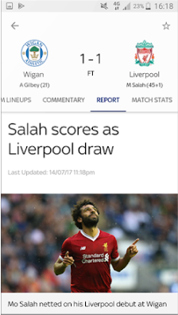
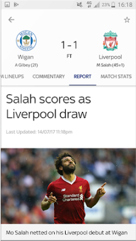

Arsenal v
Chelsea

WHAT IT DOES
An Enhanced Football Experience
Learn moreGET STARTED
User-friendly Interface
Learn more 



Features That Will Tailor Your Experience
-

• Video highlights for every Premier League and English Football League game
-

• Notifications for your teams, including in-game goal clips and Premier League match highlights for Sky TV subscribers with Guardian.
-

• Brand new video section including dedicated areas for your chosen team, trending video, Premier League, Football league and other major leagues
-

• Match pages showing live scores, commentary, team line-ups and enhanced match stats to keep you up-to-date on all the action
-

• The new picture in picture video mode means you can watch goals, manager interviews and more whilst using other areas of the app – so you don’t need to miss any of the action
-

• Live updated league tables including all the domestic, European and major leagues and tournaments
-
• The Guardian News Vidiprinter. Follow the goals as they go in with our new and improved Vidiprinter
-

• Match reports, previews and a dedicated news section
-

• And you can achieve super-fan status by personalising your home page with up-to-the-minute information on your team.
What Our Users Say

I use this app every day and it's a great way to keep up to date with what's going on in football. It's a shame it won't rotate into landscape mode like its main competitor

Good for scores and commentary but the team lineups have stopped working.
Good for watching the goals and great for highlights instead of waiting till 10:30 before you can watch highlights on March of the day also no need of sky go